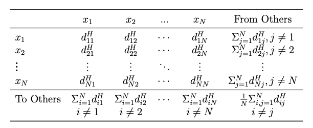

Diebold&Yilmaz method#
First: 2023.05.01 Updated:2024.12.27 Version: 0.2
The Diebold and Yilmaz (2009) method is a widely used approach for measuring spillover effects between financial markets or economic variables. This method calculates the extent to which shocks to one variable in a multivariate system affect other variables. It is particularly valuable in the analysis of financial contagion and market interdependence, helping to assess how changes in one market (e.g., stock returns) spill over to others (e.g., bond yields, commodity prices).
The Diebold-Yilmaz (DY) method focuses on forecast error variance decompositions from a Vector Autoregressive (VAR) model to quantify the contribution of each variable’s innovations to the forecast error of other variables in the system.
1. Key Concepts#
Variance Decomposition:
The main idea is to decompose the forecast error variance of each variable into components that show how much of the variance is explained by the shocks (innovations) to each of the other variables.
This gives a measure of the interconnectedness or spillover among the variables.
Variance Decomposition Matrix:
From a VAR model, the forecast error variance decomposition matrix is constructed, where each element represents how much of the variance in one variable is due to shocks from other variables.
Spillover Index:
The DY method uses the total spillover index to summarize the overall interconnectedness in the system. It also decomposes spillovers into total outgoing spillovers (how much each variable “sends out” shocks) and total incoming spillovers (how much each variable “receives” shocks).
1.1 Methodology#
Estimate a VAR Model:
The first step is to estimate a Vector Autoregression (VAR) model using the time series data. This model captures the dynamic relationship between the variables.
Variance Decomposition:
Compute the forecast error variance decomposition to see how much of the variance in each variable is explained by its own shocks and by shocks to the other variables.
Compute Spillover Indices:
Calculate the spillover index and directional spillovers (i.e., how much a shock from one variable affects others). This can be broken down into:
Total Spillovers: Measure of overall interconnectedness.
Outgoing Spillovers: Measure of how much a variable sends out shocks to others.
Incoming Spillovers: Measure of how much a variable is affected by shocks from others.
2. Connectedness#
连通性（Connectedness）是现代风险度量和管理的中心概念。以往的基于相关性的度量方法虽然广泛使用，但是它只测量成对的关联，并且很大程度上与线性、高斯方法联系在一起。Equi-correlation（Engle&Kelly,2012）有效的集中在平均的成对相关性（average pairwise correlation）。CoVaR方法（Adrian&Brunnermeier，2011）、MES方法（Acharya，2010；Acharya，2012）超越以往的成对关联性，跟踪单个企业和整个市场之间的关联。
\(d^H_{ij}\) 表示 \(ij\)-th \(H\)-step variance decomposition component;

3. connectedness measures#
\(C^H_{i\leftarrow j}\)：成对有向连通性(pairwise directional connectedness)
\(C^H_{i\leftarrow \bullet}\)：到\(i\)的总有向连通性
H-step 方差分解矩阵\(D^{gH}=[d_{ij}^{gH}]\)包含元素\(d^{gH}_{ij}\):
4. Diebold & Yilmaz Spillover Index#
The spillover index is calculated as follows:
Total Spillover Index: $\( \text{Total Spillover Index} = \frac{\sum_{i \neq j} \text{Variance Decomposition (i → j)}}{\sum_{i} \text{Variance Decomposition (i → i)}} \)$
Directional Spillovers:
Outgoing Spillover from variable \(i\) to \(j\): The proportion of variance in \(j\)’s forecast error that is explained by \(i\)’s shock.
Incoming Spillover: The proportion of variance in \(i\)’s forecast error explained by shocks from \(j\).
4.1 Advantages of Diebold & Yilmaz Method#
Quantifies Interconnectedness: Provides a clear measure of how much each variable influences others.
Identifies Spillovers: Helps to quantify financial contagion, which is useful in risk management and policy making.
Useful in Crisis Periods: Effectively captures market contagion during times of economic instability.
4.2 Limitations#
Model Assumptions: The method assumes that the VAR model is correctly specified and that all relationships are linear.
Sensitivity to Lag Length: The results can be sensitive to the number of lags chosen for the VAR model.
Stationarity: The variables should be stationary; otherwise, pre-processing like differencing is required.
Reference#
Diebold&Yilmaz, on the network Topology of Variance Decompostions, 2012
Engle, R.F. and B.T. Kelly (2012), “Dynamic Equicorrelation,” Journal of Business and Economic Statistics, 30, 212–228.
Adrian, T. and M. Brunnermeier (2011), “CoVaR,” NBER Working Paper No. 17454.
Acharya, V., L. Pedersen, T. Philippe, and M. Richardson (2010), “Measuring Systemic Risk,” Manuscript, Stern School, New York University.
Acharya, V.V., R. Engle, and M. Richardson (2012), “Capital Shortfall: A New Approach to Ranking and Regulating Systemic Risks,” American Economic Review Papers and Pro- ceedings, in press.